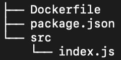

Build and Run An Image page
Build an image and run a container for our NodeJS app.
App Review
In the last section, we created a Dockerfile for our NodeJS app.
FROM node:15
ARG PORT=8000
ENV PORT=$PORT
WORKDIR app
COPY src src
COPY package.json .
RUN npm install
EXPOSE $PORT
CMD npm start
At this point, our directory should look like this

Build our image
Ensure you have docker desktop running on your machine, then open a terminal to your application directory and run
docker build -t my-node-app .
- The
-t my-node-appargument tells Docker to call the image produced by theDockerfile"my-node-app" and tag it as "latest". The "latest" tag is the default tag, but can be overridden when building an image with:<tagname>. For example, if we wanted to tag our image asv1.0.0, we would rundocker build -t my-node-app:v1.0.0 .. - The
.argument tells Docker where it can find ourDockerfile.
Running the above command should produce output similar to below
$ docker build -t my-node-app .
Sending build context to Docker daemon 4.608kB
Step 1/9 : FROM node:15
---> b34e90f5c9c0
Step 2/9 : ARG PORT=8000
---> Running in 10a283ade4d8
Removing intermediate container 10a283ade4d8
---> dab34bb639a6
Step 3/9 : ENV PORT=$PORT
---> Running in d59fa1f9c655
Removing intermediate container d59fa1f9c655
---> 297c1df53ecf
Step 4/9 : WORKDIR app
---> Running in 3c10f19e6c08
Removing intermediate container 3c10f19e6c08
---> 939af75792da
Step 5/9 : COPY src src
---> de93d743d3d2
Step 6/9 : COPY package.json .
---> 8da01f3b7081
Step 7/9 : RUN npm install
---> Running in f4dacf2d3094
added 168 packages, and audited 168 packages in 8s
10 packages are looking for funding
run `npm fund` for details
found 0 vulnerabilities
Removing intermediate container f4dacf2d3094
---> e791171147b9
Step 8/9 : EXPOSE $PORT
---> Running in f8fc12376572
Removing intermediate container f8fc12376572
---> a24bac3b5c39
Step 9/9 : CMD npm start
---> Running in 50c5f19c7773
Removing intermediate container 50c5f19c7773
---> 3eaf756066ae
Successfully built 3eaf756066ae
Successfully tagged my-node-app:latest
View our image
The my-node-app:latest image has been saved to our local Docker registry. Run docker image ls and you can see information about it.
$ docker image ls
REPOSITORY TAG IMAGE ID CREATED SIZE
my-node-app latest 848464f1725a 5 seconds ago 944MB
node 15 b34e90f5c9c0 24 hours ago 935MB
You'll notice there's also a node:15 image in our registry. This is because we defined it as our base image in our Dockerfile (FROM node:15). It was pulled from Dockerhub so it can be used locally.
Run our image
We're finally ready to run our image. Open a terminal and run
docker run --name my-container -p 8000:8000 -d my-node-app:latest
--name my-containergives our container a friendly name. If this is not provided, Docker will name the container for you.-p 8000:8000publishes the container's internal port 8000 to our host machine's port 8000. This will allow us to access the app fromlocalhost:8000-druns the container in detached mode. This runs the process as a background process.my-node-app:latestspecifies what image we want to run. If this image does not exist in our local registry, Docker will try and find and download a match from Dockerhub.
Running the above command should produce output similar to below
$ docker run --name my-container -p 8000:8000 -d my-node-app:latest
71cfe418a26a05bbebb160f541e53c025157dc7ee2c333ab2309c7bc66bb24e3
Open your browser to localhost:8000 and you should see Hello World!. You just ran your first docker image!
Interacting with our container
Run docker ps to see the status of all running containers
$ docker ps
CONTAINER ID IMAGE COMMAND CREATED STATUS PORTS NAMES
71cfe418a26a my-node-app:latest "docker-entrypoint.s…" About a minute ago Up About a minute 0.0.0.0:8000->8000/tcp my-container
You can view logs with docker logs <container-name>
$ docker logs my-container
> bitovi-academy-app@1.0.0 start
> nodemon src/index.js
[nodemon] 2.0.6
[nodemon] to restart at any time, enter `rs`
[nodemon] watching path(s): *.*
[nodemon] watching extensions: js,mjs,json
[nodemon] starting `node src/index.js index.js`
Example app listening at http://localhost:8000
Finally, stop our container with docker stop <container-name> and docker rm <container-name>. If you want to do this with one command, just run docker rm -f <container-name>.
$ docker rm -f my-container
my-container
$ docker ps
CONTAINER ID IMAGE COMMAND CREATED STATUS PORTS NAMES
Customize the port
We can use the -e flag when starting our container to set the PORT environment variable.
$ MY_PORT=9000
$ docker run --name my-container -p 8000:$MY_PORT -d -e PORT=$MY_PORT my-node-app:latest
0c0a51e7a19f37d503452892df9498de18c5dc78719aae2511b42a32f1f734ad
$ docker logs my-container
> bitovi-academy-app@1.0.0 start
> nodemon src/index.js
[nodemon] 2.0.6
[nodemon] to restart at any time, enter `rs`
[nodemon] watching path(s): *.*
[nodemon] watching extensions: js,mjs,json
[nodemon] starting `node src/index.js index.js`
Example app listening at http://localhost:9000
You'll see the last line of the logs indicating the app is now listening on port 9000. However, because we set the port mapping with -p 8000:9000, we still will view the application in our browser from localhost:8000.
Review
We've built an image and run a container for our NodeJS app. Here's a cheat sheet of all the commands we ran.
# Build an image
docker build -t my-node-app .
# Build an image with a custom tag
docker build -t my-node-app:v1.0.0 .
# List images in registry
docker image ls
# Create a container
docker run --name my-container -p 8000:$MY_PORT -d -e PORT=$MY_PORT my-node-app:latest
# List running containers
docker ps
# View container logs
docker logs <container-name>
# Kill a container
docker rm -f <container-name>
Next we'll look at introducing storage mounts to make local application development efficient.